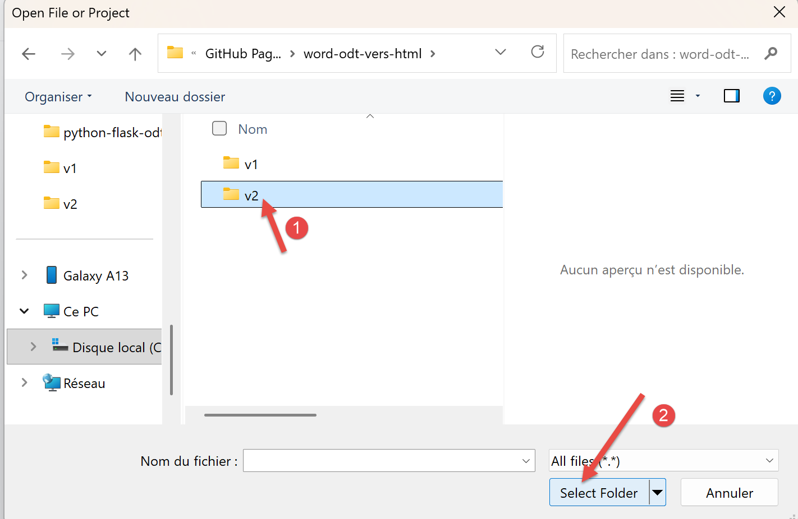
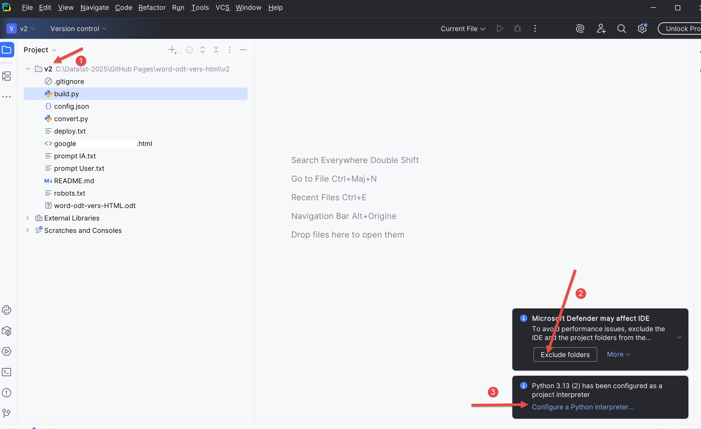
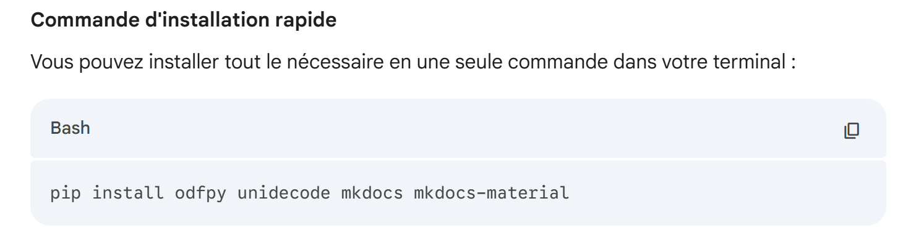
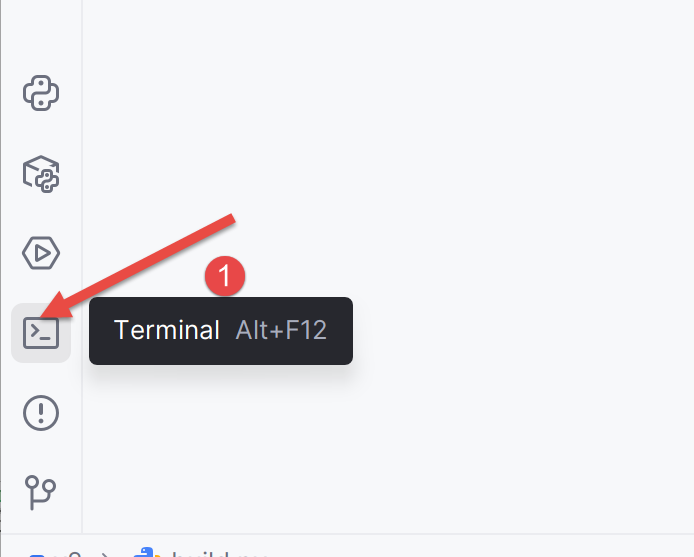
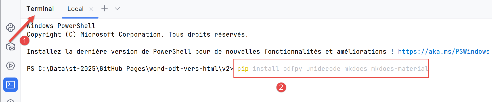
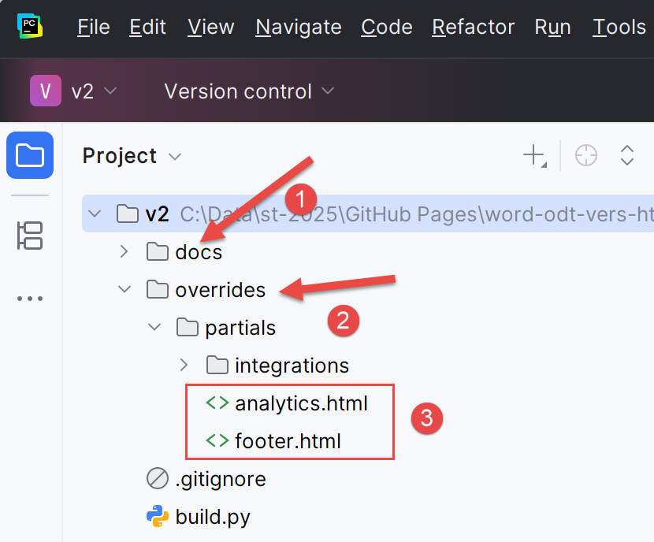
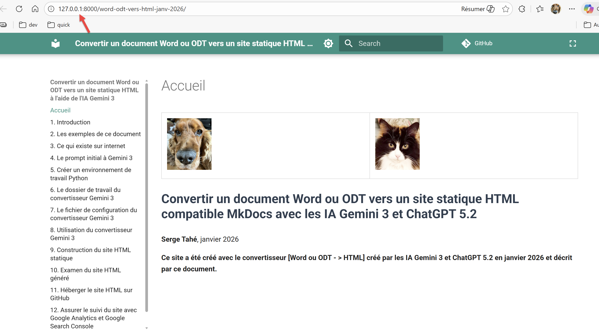

8. Utilisation du convertisseur ODT → HTML
On rappelle que le dossier de travail peut être trouvé |ICI|.
Lançons PyCharm :
 |
- En [2], ouvrez un nouveau projet ;
|  |
- En [1], sélectionner le dossier où vous avez sauvegardé le dossier de travail ;
- En [2], validez ce choix ;
|  |
- En [1], votre projet Python ;
- En [2], validez pour ne pas être embêté par le système de sécurité de Windows ;
- En [3], choisissez un interpréteur Python ;
 |
- En [1], choisissez l’interpréteur Python que vous avez installé au paragraphe 5 ;
Le convertisseur Gemini / ChatGPT utilise des dépendances Python que vous devez installer. On va demander lesquelles à Gemini :
 |
La réponse de Gemini est la suivante :
|  |
On va installer ces dépendances :
|  |
- En [1], ouvrez un terminal ;
|  |
- En [2], tapez la commande donnée par Gemini ;
La réponse est la suivante :
PS C:\Data\st-2025\GitHub Pages\word-odt-vers-html\v2> pip install odfpy unidecode mkdocs mkdocs-material
Defaulting to user installation because normal site-packages is not writeable
Requirement already satisfied: odfpy in c:\users\serge\appdata\roaming\python\python313\site-packages (1.4.1)
Requirement already satisfied: unidecode in c:\users\serge\appdata\roaming\python\python313\site-packages (1.4.0)
Requirement already satisfied: mkdocs in c:\users\serge\appdata\roaming\python\python313\site-packages (1.6.1)
Requirement already satisfied: mkdocs-material in c:\users\serge\appdata\roaming\python\python313\site-packages (9.7.0)
Requirement already satisfied: defusedxml in c:\users\serge\appdata\roaming\python\python313\site-packages (from odfpy) (0.7.1)
Requirement already satisfied: click>=7.0 in c:\users\serge\appdata\roaming\python\python313\site-packages (from mkdocs) (8.3.1)
Requirement already satisfied: colorama>=0.4 in c:\users\serge\appdata\roaming\python\python313\site-packages (from mkdocs) (0.4.6)
Requirement already satisfied: ghp-import>=1.0 in c:\users\serge\appdata\roaming\python\python313\site-packages (from mkdocs) (2.1.0)
Requirement already satisfied: jinja2>=2.11.1 in c:\users\serge\appdata\roaming\python\python313\site-packages (from mkdocs) (3.1.6)
Requirement already satisfied: markdown>=3.3.6 in c:\users\serge\appdata\roaming\python\python313\site-packages (from mkdocs) (3.10)
Requirement already satisfied: markupsafe>=2.0.1 in c:\users\serge\appdata\roaming\python\python313\site-packages (from mkdocs) (3.0.2)
Requirement already satisfied: mergedeep>=1.3.4 in c:\users\serge\appdata\roaming\python\python313\site-packages (from mkdocs) (1.3.4)
Requirement already satisfied: mkdocs-get-deps>=0.2.0 in c:\users\serge\appdata\roaming\python\python313\site-packages (from mkdocs) (0.2.0)
Requirement already satisfied: packaging>=20.5 in c:\users\serge\appdata\roaming\python\python313\site-packages (from mkdocs) (25.0)
Requirement already satisfied: pathspec>=0.11.1 in c:\users\serge\appdata\roaming\python\python313\site-packages (from mkdocs) (0.12.1)
Requirement already satisfied: pyyaml-env-tag>=0.1 in c:\users\serge\appdata\roaming\python\python313\site-packages (from mkdocs) (1.1)
Requirement already satisfied: pyyaml>=5.1 in c:\users\serge\appdata\roaming\python\python313\site-packages (from mkdocs) (6.0.2)
Requirement already satisfied: watchdog>=2.0 in c:\users\serge\appdata\roaming\python\python313\site-packages (from mkdocs) (6.0.0)
Requirement already satisfied: babel>=2.10 in c:\users\serge\appdata\roaming\python\python313\site-packages (from mkdocs-material) (2.17.0)
Requirement already satisfied: backrefs>=5.7.post1 in c:\users\serge\appdata\roaming\python\python313\site-packages (from mkdocs-material) (6.1)
Requirement already satisfied: mkdocs-material-extensions>=1.3 in c:\users\serge\appdata\roaming\python\python313\site-packages (from mkdocs-material) (1.3.1)
Requirement already satisfied: paginate>=0.5 in c:\users\serge\appdata\roaming\python\python313\site-packages (from mkdocs-material) (0.5.7)
Requirement already satisfied: pygments>=2.16 in c:\users\serge\appdata\roaming\python\python313\site-packages (from mkdocs-material) (2.19.2)
Requirement already satisfied: pymdown-extensions>=10.2 in c:\users\serge\appdata\roaming\python\python313\site-packages (from mkdocs-material) (10.17.2)
Requirement already satisfied: requests>=2.26 in c:\users\serge\appdata\roaming\python\python313\site-packages (from mkdocs-material) (2.32.5)
Requirement already satisfied: python-dateutil>=2.8.1 in c:\users\serge\appdata\roaming\python\python313\site-packages (from ghp-import>=1.0->mkdocs) (2.9.0.post0)
Requirement already satisfied: platformdirs>=2.2.0 in c:\users\serge\appdata\roaming\python\python313\site-packages (from mkdocs-get-deps>=0.2.0->mkdocs) (4.5.0)
Requirement already satisfied: six>=1.5 in c:\users\serge\appdata\roaming\python\python313\site-packages (from python-dateutil>=2.8.1->ghp-import>=1.0->mkdocs) (1.17.0)
Requirement already satisfied: charset_normalizer<4,>=2 in c:\users\serge\appdata\roaming\python\python313\site-packages (from requests>=2.26->mkdocs-material) (3.4.3)
Requirement already satisfied: idna<4,>=2.5 in c:\users\serge\appdata\roaming\python\python313\site-packages (from requests>=2.26->mkdocs-material) (3.10)
Requirement already satisfied: urllib3<3,>=1.21.1 in c:\users\serge\appdata\roaming\python\python313\site-packages (from requests>=2.26->mkdocs-material) (2.5.0)
Requirement already satisfied: certifi>=2017.4.17 in c:\users\serge\appdata\roaming\python\python313\site-packages (from requests>=2.26->mkdocs-material) (2025.8.3)
PS C:\Data\st-2025\GitHub Pages\word-odt-vers-html\v2>
Sur mon PC, tout était déjà installé. Si ce n’est pas votre cas, toutes les dépendances demandées vont être installées.
Maintenant, nous pouvons utiliser le convertisseur. Dans le terminal ouvert, tapez la commande suivante :
PS C:\Data\st-2025\GitHub Pages\word-odt-vers-html\v2> python .\convert_odt_v356.py .\word-odt-vers-html-janv-2026.odt .\config.py
--- ODT to MkDocs Converter V356 ---
Traitement de .\word-odt-vers-html-janv-2026.odt...
Copié : google5179c0eaff293e02.html
Copié : robots.txt
Copié : word-odt-vers-html-janv-2026.pdf
Copié : word-odt-vers-html-janv-2026.zip
Scan des renvois...
Génération Markdown...
[DEBUG PRE-H1] Tag=text:p Style='Standard' Text='...'
[DEBUG PRE-H1] Tag=text:p Style='Standard' Text='...'
[DEBUG PRE-H1] Tag=text:p Style='Standard' Text='...'
[DEBUG PRE-H1] Tag=text:p Style='Standard' Text='...'
[DEBUG PRE-H1] Tag=text:p Style='Standard' Text='...'
[DEBUG PRE-H1] Tag=text:p Style='Standard' Text='...'
[DEBUG PRE-H1] Tag=text:p Style='Standard' Text='...'
[DEBUG PRE-H1] Tag=text:p Style='Standard' Text='...'
[DEBUG PRE-H1] Tag=text:p Style='Standard' Text='...'
[DEBUG PRE-H1] Tag=text:p Style='Standard (WW)' Text='...'
[DEBUG PRE-H1] Tag=text:p Style='Standard (WW)' Text='...'
[DEBUG PRE-H1] Tag=text:p Style='P1' Text='Convertir un document Word ou ODT vers un site sta...'
>>> TITRE DOCUMENT TROUVÉ : Convertir un document Word ou ODT vers un site statique HTML compatible MkDocs avec les IA Gemini 3 et ChatGPT 5.2
[DEBUG PRE-H1] Tag=text:p Style='P2' Text='...'
[DEBUG PRE-H1] Tag=text:p Style='P2' Text='...'
[DEBUG PRE-H1] Tag=text:p Style='P2' Text='...'
[DEBUG PRE-H1] Tag=text:p Style='P3' Text='Serge Tahé, janvier 2026...'
[DEBUG PRE-H1] Tag=text:p Style='P2' Text='...'
[DEBUG PRE-H1] Tag=text:p Style='P2' Text='...'
[DEBUG PRE-H1] Tag=text:p Style='P2' Text='...'
[DEBUG PRE-H1] Tag=text:p Style='P4' Text='...'
[DEBUG PRE-H1] Tag=text:p Style='P4' Text='...'
[DEBUG PRE-H1] Tag=text:p Style='P4' Text='...'
[DEBUG PRE-H1] Tag=text:p Style='P4' Text='Ce site a été créé avec le convertisseur [Word ou ...'
[DEBUG PRE-H1] Tag=text:h Style='P5' Text='Introduction...'
>>> CHAPITRE 1: 1 Introduction
>>> CHAPITRE 1: 2 Les exemples de ce document
>>> CHAPITRE 2: 2.1 Les listes
>>> CHAPITRE 3: 2.1.1 Listes à puces
>>> CHAPITRE 3: 2.1.2 Listes numérotées
>>> CHAPITRE 3: 2.1.3 Listes mixtes 1
>>> CHAPITRE 3: 2.1.4 Listes mixtes 2
>>> CHAPITRE 2: 2.2 Les blocs de code
>>> CHAPITRE 3: 2.2.1 Blocs de code enrichi (Eclipse, Visual Studio, ...)
>>> CHAPITRE 3: 2.2.2 Blocs de code brut (plain text)
>>> CHAPITRE 2: 2.3 Les liens
>>> CHAPITRE 2: 2.4 L’enrichissement de texte
>>> CHAPITRE 2: 2.5 Un titre peut être également enrichi.
>>> CHAPITRE 2: 2.6 Les images
>>> CHAPITRE 2: 2.7 Les caractères à protéger
>>> CHAPITRE 2: 2.8 Les tableaux
>>> CHAPITRE 2: 2.9 Les notes de bas de page
>>> CHAPITRE 1: 3 Ce qui existe sur internet
>>> CHAPITRE 1: 4 Le prompt initial à Gemini 3
>>> CHAPITRE 1: 5 Créer un environnement de travail Python
>>> CHAPITRE 1: 6 Le dossier de travail du convertisseur
>>> CHAPITRE 1: 7 Le fichier de configuration du convertisseur
>>> CHAPITRE 1: 8 Utilisation du convertisseur ODT → HTML
>>> CHAPITRE 1: 9 Utilisation du convertisseur DOCX → HTML
>>> CHAPITRE 1: 10 Construction du site HTML statique
>>> CHAPITRE 1: 11 Examen du site HTML généré
>>> CHAPITRE 2: 11.1 La barre supérieure du site
>>> CHAPITRE 2: 11.2 Le bas de page du site
>>> CHAPITRE 2: 11.3 La page d’accueil
>>> CHAPITRE 2: 11.4 Les listes à puces
>>> CHAPITRE 2: 11.5 Les listes numérotées
>>> CHAPITRE 3: 11.5.1 Listes mixtes 1
>>> CHAPITRE 3: 11.5.2 Listes mixtes 2
>>> CHAPITRE 2: 11.6 Les blocs de code enrichis
>>> CHAPITRE 3: 11.6.1 Exemple 1
>>> CHAPITRE 3: 11.6.2 Exemple 2
>>> CHAPITRE 3: 11.6.3 Exemple 3
>>> CHAPITRE 2: 11.7 Les blocs de code brut (plain text)
>>> CHAPITRE 3: 11.7.1 Exemple 1
>>> CHAPITRE 3: 11.7.2 Exemple 2
>>> CHAPITRE 3: 11.7.3 Exemple 3
>>> CHAPITRE 2: 11.8 Autres blocs de code
>>> CHAPITRE 2: 11.9 Les liens
>>> CHAPITRE 2: 11.10 L’enrichissement de texte
>>> CHAPITRE 2: 11.11 Les images
>>> CHAPITRE 2: 11.12 Les caractères protégés
>>> CHAPITRE 2: 11.13 Les tableaux
>>> CHAPITRE 2: 11.14 Notes de bas de page
>>> CHAPITRE 2: 11.15 Anomalies connues
>>> CHAPITRE 2: 11.16 Autres cas
>>> CHAPITRE 1: 12 Héberger le site HTML sur GitHub
>>> CHAPITRE 1: 13 Assurer le suivi du site avec Google Analytics et Google Search Console
>>> CHAPITRE 1: 14 Conclusion
Terminé.
- Ligne 1 : la commande qui convertit le document ODT en site MkDocs [python convert_odt_v356.py .\word-odt-vers-html-janv-2026.odt .\config.py]. ]. Adaptez le numéro de version (ici 356) à la version que vous avez téléchargée. Le premier paramètre du convertisseur est le document ODT à convertir, le second le fichier de configuration du convertisseur ;
- lignes 4-7 : les fichiers que le convertisseur copie à la racine du site MkDocs qu’il crée ;
- lignes 10-34 : le débogage des styles des paragraphes qui précèdent le premier titre de niveau 1. Ces paragraphes vont constituer la page d’accueil. Un des paragraphes joue le rôle de titre de la page d’accueil et donc du site. C’est le paragraphe de la ligne 21. On note son style P1. On doit mettre ce style dans le fichier de configuration :
# -------------------------------------------------------------------------
# Détection du Titre du Document
# -------------------------------------------------------------------------
"document_title": {
# Styles ODT à considérer comme le titre principal du document (H1 global)
"style_names": [
"P1"
],
# CSS appliqué à ce titre dans le Markdown généré
"css": "font-size: 28px; font-weight: bold; margin-bottom: 1em; line-height: 1.2; color: #2c3e50;"
},
- lignes 35-88 : j’ai demandé à l’IA de loguer tous les chapitres qu’il rencontrait ;
Cette exécution a modifié votre dossier de travail :
|  |
- En [1], [docs] est le site MkDocs que le convertisseur Gemini / ChatGPT a créé. Vous pouvez avoir la curiosité de le visiter ;
- en [2], un dossier [overrides] a été créé. Il va être utilisé par le constructeur [build] du site HTML ;
- en [3] : [analytics.html] sera utilisé pour le suivi du site par Google Analytics. [footer.html] est le bas de page que vous avez défini dans le fichier [config.py] ;
On pourrait utiliser le site MkDocs dès maintenant. La commande [python -m mkdocs serve] permet de le visualiser. Vous pouvez essayer :
PS C:\Data\st-2025\GitHub Pages\word-odt-vers-html\v2> python -m mkdocs serve
INFO - Building documentation...
INFO - Cleaning site directory
INFO - Doc file 'les-exemples.md' contains a link '#_Les_exemples', but there is no such anchor on this page.
INFO - Documentation built in 0.41 seconds
INFO - [15:46:06] Serving on http://127.0.0.1:8000/word-odt-vers-html-janv-2026/
Ctrl-cliquez sur le lien de la ligne 6. Le site MkDocs doit apparaître :
|  |
Voici le fruit d’un long travail. Pour arrêter le serveur de MkDocs, faites simplement Ctrl-C dans le terminal qui l’a lancé.